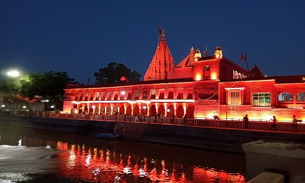
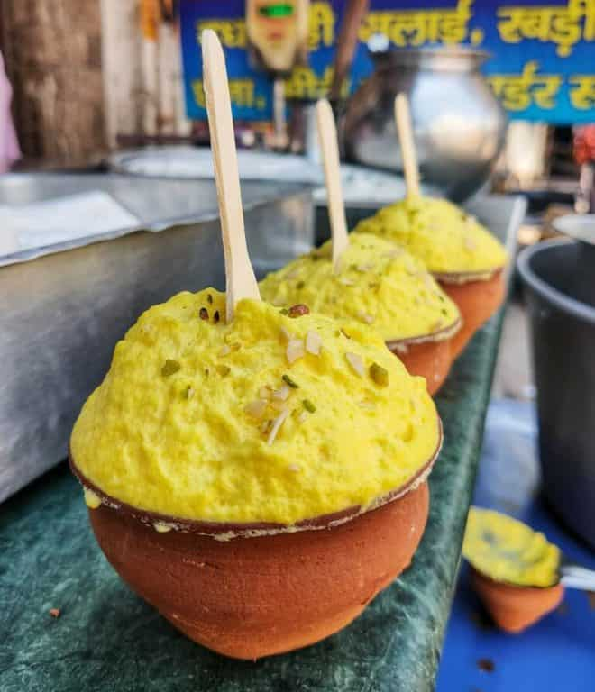

This beautiful place offers an amazing blend of nature, culture, and modernity. Perfect for travelers seeking both relaxation and adventure.
The Ganga River is sacred in Hinduism, especially in Varanasi, Lord Shiva's city. According to mythology, when Ganga descended from the heavens, her force was so great that only Lord Shiva could control it. He caught her in his matted hair, allowing the river to flow gently onto the earth. In Varanasi, Ganga's presence symbolizes both spiritual purification and the eternal connection to Shiva, making the river a central part of the city’s religious life and rituals.
The Divinity of River Ganga
Experience serenity as the Ganges flows by
“The sacred Ganga, a thread stitching the fabric of India’s spiritual tapestry.” Ganga, a river of tales, whispers stories of ancient times in every ripple. In the embrace of Ganga’s flow, history unfolds like a living book. Ganga’s waters weave a melody, harmonizing with the soul of the land.
In Varanasi, the Ganga is revered as a mother, flowing with deep spiritual significance. Her waters cleanse both the body and soul, while the ghats along her banks serve as a hub for devotion and daily life. The Ganga is the heart of the city's culture and faith.
The Sacred Journey
Boating on the Ganges River in Varanasi is an ethereal experience like no other. As you glide through the serene waters at dawn, the golden rays of the sun gently kiss the waves, creating a magical aura. The air is filled with the divine chants and the scent of incense, bringing you closer to the spiritual essence of the city.
As the boat moves, you witness the centuries-old ghats, where life unfolds in its purest form. Devotees take holy dips, priests perform rituals, and the Ganga Aarti in the evening transforms the atmosphere into one of pure divinity. The reflections of the diyas (lamps) on the water create a mesmerizing view that will stay with you forever.
Eploring The Ghat's Of varanasi
Sunset at the Devine Ghat
Historic Architecture
Boating near the historic ghats
Embrace the Peace
The calm flow of the Ganges invites you to reflect on your inner self. Each boat ride is not just a journey on the river, but a journey within. The peace you feel as you witness the grandeur of Varanasi from the boat is unparalleled.
The divine feeling of Varanasi is amplified with the sound of temple bells and the sight of saffron-clad sadhus meditating by the river. It is as if time stands still, and you are one with the flow of the river and the rhythm of life.
Explore the Sacred Temples of Varanasi
Discover the spiritual richness of Varanasi through its ancient temples.
Varanasi is home to several sacred temples:
Kashi Vishwanath Temple: Dedicated to Lord Shiva, it's the city's most important temple, symbolizing liberation.
Durga Temple: Known for its red hue, it's dedicated to Goddess Durga and attracts many devotees.
Sankat Mochan Hanuman Temple: Famous for worshipping Lord Hanuman, offering relief from troubles.
Tulsi Manas Temple: Marks where the Ramcharitmanas was written by Tulsidas.
These temples make Varanasi a spiritual hub for pilgrims.
About Varanasi
Varanasi, the spiritual capital of India, is known for its sacred temples, the holy Ganges, and its vibrant religious life. Here are some of the must-visit temples in Varanasi that offer a deep spiritual experience.
Famous Temples in Varanasi
Kashi Vishwanath Temple

Durga Temple
Sankat Mochan Hanuman Temple
Tulsi Manas Temple
Discover the spiritual and cultural heart of India. Varanasi is one of the oldest cities in the world, renowned for its ghats, temples, and vibrant culture. Learn more about the city's famous locations.
Must Visit Places
MUST TRY FOOD'S
Try local delicacies like traditional dishes, street food, and world-renowned cuisines that offer a rich taste of the region's culture.

Our Featured Restaurants
Baati Chokha Taste of Banaras
Authentic Food, Authentic Taste and Awesome Ambience
Kashi Chaat Bhandar
A great restaurant blends exceptional food, ambiance, and service to create an unforgettable dining experience.
Zaika Restaurant
we serve the food you just dream to have.
Sri Annapurna Restaurant
A haven for vegan lovers offering delicious plant-based meals.
Hotel Bookings
Explore the best hotels in the area, from budget-friendly stays to luxury resorts. Book Now.
Book Your Stay
Taj Ganges Varanasi
Location: Nadesar palace,varanasi
Price:₹16500/night
The HHI hotel
Location: Maldahia,varanasi
Price:₹6000/night
Radission hotel
Location: CANTOMENT,varanasi
Price:₹8100/night
CityInn hotel
Location:Cant railway station,varanasi
Price:₹2500/night
Book Your Ride with Rapido
Fast, convenient, and affordable bike rides at your fingertips. Click below to book your Rapido ride now!